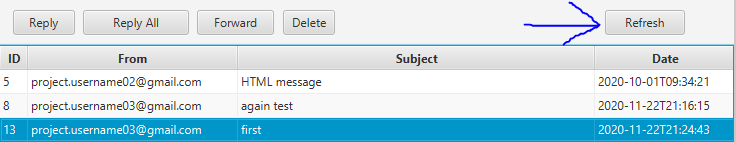

Help for Java Application for Gmail
Mail Configurations:
This button saves the configurations entered in the form. Every field must be valid and filled.
This button cancels the program since you do not save the mail config to run the program.
Folders:
Click a folder to open all the emails in that folder. Default(mandatory) folders are INBOX, SENT, and DRAFT
This button adds a folder to the application in which you can add emails into it
This button deletes an existing folder to the application, however you cannot delete one of the default folders(listed above). You can add emails into it
Email Table:
Reply button: reply to whom you received the email from
Reply All button: reply to all To and CC recipients
Forward button: forward the email to a user(s)
Delete button: deletes the email from the database

Refresh button: refreshes the emails in the folder the user is in. This is essentially useful in the INBOX folder since it receives emails from the actual server
Compose/Send/Save Email:
This button creates a new email that the user can send or save to draft.

This button sends an email given its recipients. Can only click send if composing a new email or a draft email
This button saves an email and sends it to draft to be further edited. Can only click save as draft if composing a new email or a draft email
NOTE: when adding multiple email addresses in one recipient field (I.e. "To"), you MUST separate them with a " "/blank space
NOTE: BCC recipients will be shows only if the email is saved as draft or if the user has been sent the email
Attachments:
In the Mail menu bar, there are two attachment options:
Save Attachments: allows user to save the attachments in a selected email in a chosen directory on disk
Add Attachments: allows user to add a regular attachment in a composed or draft email